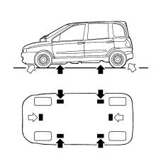
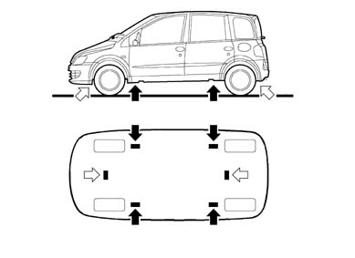

VEHICLE LIFTING POINTS
- Path
- Technical Data > GENERAL INFORMATION > VEHICLE TOWING AND LIFTING POINTS > VEHICLE LIFTING POINTS
- Kind
- technical data / specifications
- Applies to
- all engines; all production periods
- Interactive page
- https://sloeber94.github.io/elrnDB-fMltpl/en/#/2888513
Applies to: all engines; all production periods
To raise the vehicle using lift arms or a workshop lift, arrange the ends of the arms or the lift in the areas shown in the diagram only.
White arrow: with the workshop lift.
Black arrow: with the lift arms.


Applies to: all engines; production: da 06/04
Description | Thousands of kilometres | ||||||||
|---|---|---|---|---|---|---|---|---|---|
20 | 40 | 60 | 80 | 100 | 120 | 140 | 160 | 180 | |
Check tyre condition and wear | + | + | + | + | + | + | + | + | + |
Check operation of front brake disc pad wear sensor | + | + | + | + | + | + | + | + | + |
Check rear drum brake linings condition and wear | + | + | + | ||||||
Visually inspect condition of: underbody protection, pipes (exhaust - fuel system - braking system) rubber elements (boots - hoses - bushes - etc.) | + | + | + | + | + | + | + | + | + |
Check tension and, if necessary, adjust various drive belts (excluding engines fitted with automatic tensioners) | + | ||||||||
Visually inspect condition of trapezoid and/or poly-V drive belts | + | + | + | + | |||||
Check/adjust clutch pedal free play or height | + | + | + | + | |||||
Check / adjust tappet clearance (Diesel version) | + | + | + | + | + | ||||
Check/adjust handbrake lever | + | + | + | + | |||||
Check exhaust gas emissions/fumes | + | + | + | + | |||||
Check operation of evaporation control system | + | + | |||||||
Replace fuel filter (Diesel version) | + | + | + | + | + | + | + | + | + |
Replace air filter cartridge (petrol/methane versions) | + | + | + | + | |||||
Replace air filter cartridge (Diesel version) | + | + | + | + | + | + | + | + | + |
Top up fluid levels (engine coolant, brake fluid, screen washer, battery, etc.) | + | + | + | + | + | + | + | + | + |
Replace toothed timing drive belt | + | ||||||||
Replace spark plugs | + | + | + | + | |||||
Check operation of engine management systems (using diagnostic socket) | + | + | + | + | |||||
Check gearbox fluid level | + | + | |||||||
Change engine oil (*) | + | + | + | + | + | + | + | + | + |
Change engine oil filter | + | + | + | + | + | + | + | + | + |
Change brake fluid (or every 2 years) | + | + | + | ||||||
Replace pollen filter (**) | + | + | + | + | + | + | + | + | + |
Check cylinder compression when cold (methane versions) | + | + | + | + | |||||
Check methane pressure regulator and, if necessary, replace internal filter (**) | + | + | + | + | + | + | + | + | + |
Visually inspect condition of: methane pipes and connectors. Fastening and condition of methane tank, renew if necessary (**) | + | + | + | + | + | + | + | + | + |
Check operation of methane fuel system parameters (using diagnostic socket) | + | + | + | + | + | + | + | + | + |
Check torque tightening of methane canister fastening bands | + | + | + | + | + | ||||
Applies to: all engines; production: da 06/04; only with equipment: Euro 3
EURO 3 VERSION
Description | Thousands of kilometres | ||||||||
|---|---|---|---|---|---|---|---|---|---|
20 | 40 | 60 | 80 | 100 | 120 | 140 | 160 | 180 | |
Check tyre condition / wear and adjust pressure, if necessary | + | + | + | + | + | + | + | + | + |
Check operation of lighting system (headlamps, direction indicators, hazard warning lights, luggage compartment, passenger compartment, glove compartment, instrument panel warning lights, etc.) | + | + | + | + | + | + | + | + | + |
Check operation of windscreen wash/wipe system, adjust jets | + | + | + | + | + | + | + | + | + |
Check windscreen/rearscreen wiper blade position/wear | + | + | + | + | + | + | + | + | + |
Check front disc brake pad condition and wear | + | + | + | + | + | + | + | + | + |
Check rear drum brake linings condition and wear | + | + | + | ||||||
Visually inspect condition of: underbody protection, pipes (exhaust - fuel system - braking system) , rubber elements (boots - hoses - bushes - etc.), braking and fuel system flexible pipes | + | + | + | + | + | + | + | + | + |
Check tension and, if necessary, adjust accesssory drive belts (excluding engines fitted with automatic tensioners) | + | ||||||||
Visually inspect condition of various drive belts | + | + | + | + | |||||
Check/adjust clutch pedal free play or height | + | + | + | + | |||||
Check cleanliness of bonnet and boot locks, cleanliness and lubrication of linkage | + | + | + | + | + | + | + | + | + |
Check / adjust tappet clearance (diesel versiona) | + | + | + | + | + | ||||
Check/adjust handbrake lever | + | + | + | + | |||||
Check exhaust gas emissions/smoke coefficient (diesel engines) | + | + | + | + | |||||
Check anti-evaporation system | + | + | |||||||
Replace fuel filter (1910 JTD diesel versions) | + | + | + | + | + | + | + | + | + |
Replace air filter cartridge (petrol versions) | + | + | + | ||||||
Replace air filter cartridge (diesel versions) | + | + | + | + | + | + | + | + | + |
Top up fluid levels (engine coolant, brake fluid, screen washer, battery, etc.) | + | + | + | + | + | + | + | + | + |
Inspect condition of toothed timing drive belt | + | + | |||||||
Replace toothed timing drive belt (*) | + | ||||||||
Replace spark plugs (petrol versions) | + | + | + | + | |||||
Check operation of engine management systems (using diagnostic socket) | + | + | + | + | |||||
Check manual gearbox fluid level | + | + | |||||||
Check automatic transmission fluid | + | + | + | + | |||||
Change engine oil | + | + | + | + | + | + | + | + | + |
Replace engine filter | + | + | + | + | + | + | + | + | + |
Change brake fluid (or every 2 years) | + | + | + | ||||||
Change pollen filter (or every year) | + | + | + | + | + | + | + | + | + |
Visually inspect condition of: LPG/methane pipes and connectors, LPG/methane canister fastenings, renew if necessary (**) | + | + | + | + | + | + | + | + | + |
Check methane pressure regulator and, if necessary, replace internal filter (**) | + | + | + | + | + | + | + | + | + |
Check engine management systems operation (using autodiagnostic socket) (methane version) | + | + | + | + | + | + | + | + | + |
Check LPG fuel system operation and parameters (using autodiagnostic socket) (LPG version) | + | + | + | + | + | + | + | + | + |
Check torque tightening of LPG/methane canister fastening bands | + | + | + | + | + | ||||
Check cylinder compression when cold (LPG/methane versions) | + (°) | + | + (°) | + | + (°) | + | + (°) | + | + (°) |
Check correct fitting of LPG injectors (positioning, clip retention) | + | + | + | + | + | + | + | + | + |